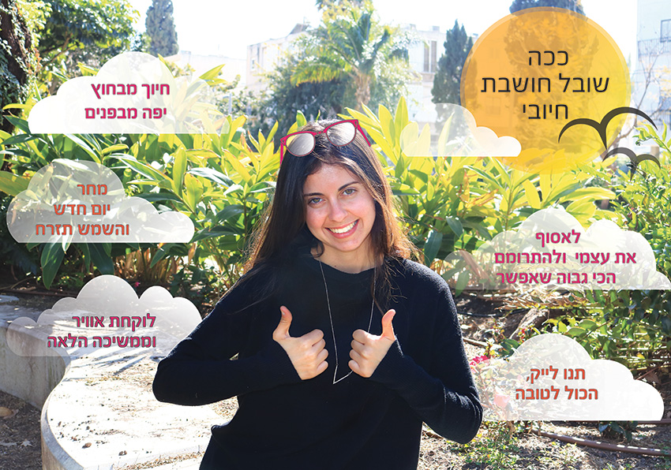

במסגרת הקורס, ביצענו משימה בשם "אחרי באלפון". בה היינו צריכים ליצור יצוג על עמית לכיתה שיעביר מידע מעניין ומיוחד על אותו אדם.
היצירה
הסבר על היצירה
בחרתי לייצג את האופטימיות והחשיבה החיובית של שובל וכיצד היא באה לידי ביטוי בשגרה ובאופי בה היא מתמודדת עם החיים. לכן, כתבתי את המשפטים ששובל אומרת לעצמה ברגעים שהיא צריכה. המשקפיים מייצגות את הראייה החיובית. העיצוב תואם את אהבתה של שובל לטבע, לסביבה החיצונית, לים ולטיולים.